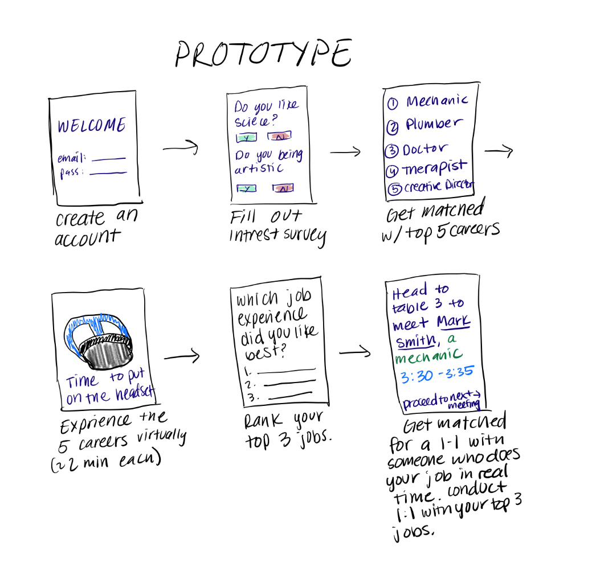
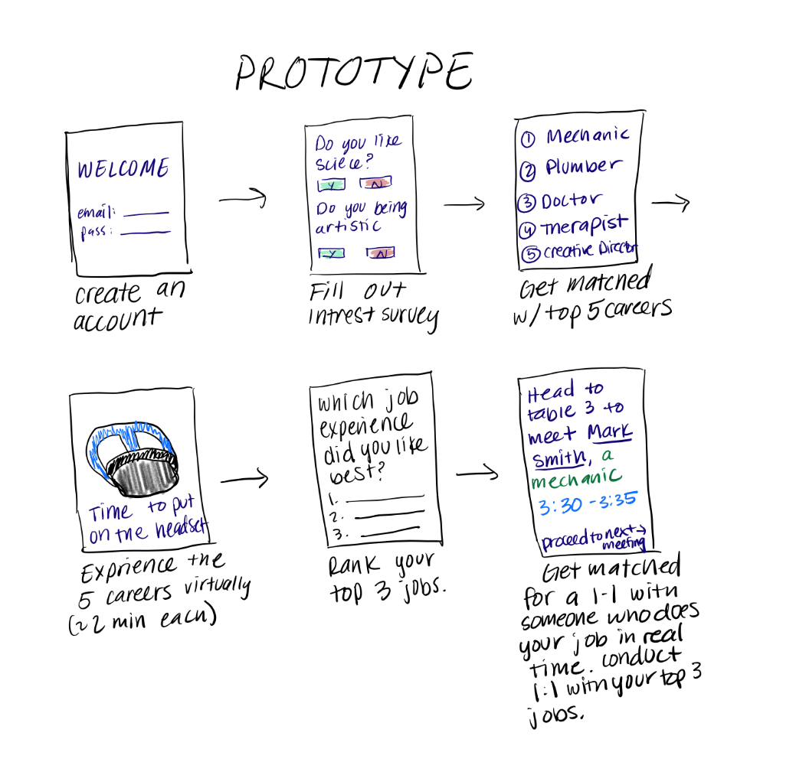

Given the broad nature of our problem space, we performed an exhaustive competitive analysis of over 3 related products.
| Competitors | Strengths |
|---|---|
| Transfr |
|
| CareerLabsVR |
|
Our main objectives were to explore the perspectives of college students, a high school student, and an industry professional regarding the potential benefits of virtual reality (VR) job shadowing in career search and collaboration opportunities
We conducted semi-structured interviews and asked about 8-10 questions per interview questions include:
- Do you think ‘shadowing’ a job via virtual reality would be beneficial in your career search? In what ways would it be beneficial? (Student)
- Would you be interested in collaborating on a VR job shadowing experience related to your field? Why or why not? (Industry Professional)
"I think having the options to do both [shadowing in person and VR] would be awesome, but I think it's crucial to be able to do it [shaodwing] in person."
- Taj, High School Student
Findings
After conducting the interviews we came up with three main themes:
Prototyping
- Design Goals
According to our research results many felt that career fairs are disorganized and there is a lack of guidance based on interests. Many interviewees also showed interest in a VR experience with a career exploration and job shadowing experience
With our analysis from our research we created the user flow
 

Prototyping
- Students filled out our personality quiz
- Students then watched their top 3 matches’ VR demo videos independently (sourced from Transfr)
- Students joined slack to keep in touch with their recruiters
- Students then decided on their favorite based on the VR demo and went to a table to speak with a recruiter and complete “aptitude tests”
| In-person Feedback | Survey Feedback | IA Feedback |
|---|---|---|
|
|
|
Incorporating feeback
| Career options not relevant | VR experience lacked interaction | Make product more beneficial for recruiters |
|---|---|---|
|
In Prototype 1, we were limited to careers that already had VR demo videos. For Prototype 2, we changed the careers to be more relevant because we no longer prototypes the VR experience as a video, but rather as an interaction |
Our first prototype had the VR demos as an independent task. This excluded recruiters from being able to interact with the students as they went along the demo. For our second prototype, we had students and recruiters enter the VR environment together to complete the aptitude tasks |
Our first prototype was not obviously beneficial to the recruiters. For our second prototype, we had recruiters using VR to complete the aptitude tasks and also had the recruiters select their standout students at the end. This enables recruiters to actually find people interested in the field and showing early talent. |
Prototyping
- Students filled out the career matching quiz once again
- After finding out their top 2 matches they joined a slack channel where they were able to join and introduce themselves to their fellow peers
- We then had them to go their 1st matchs’ table to do the VR walkthrough which was essentially an aptitude test where the student and recruiter could converse about the job
- Then after 5 minutes they did a rotation of the same thing with their 2nd match
- After this process the “recruiter” reached out to the top candidate from their session to show interest in furthering the network connection
Final Prototype

Style Guide
For our final prototype, we focused the design of the app to have a futuristic feel to emphasize the VR experience.


Scheduling
After users take the career matching quiz and receive personalized career recommendations, users see their schedule of when to use the VR and meet with the professionals
.gif)
Socialization
Users can can communicate and socialize with other professionals and students in the app. Students and recruiters are able to message and follow each other in our app